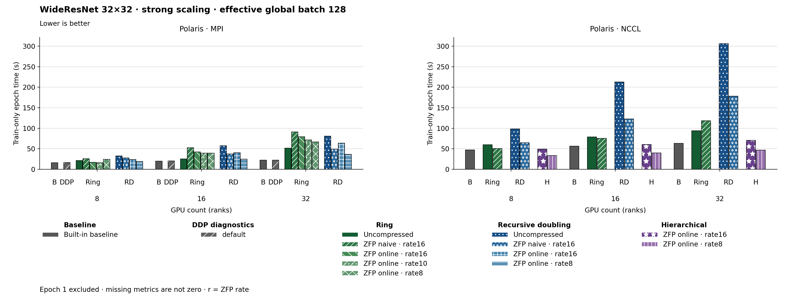

The figure uses bars. Families and methods are identified by text and patterns in addition to color. The metric is Train-only epoch time (s). Polaris · MPI, GPU count (ranks) 8: Ring · ZFP online · rate10 has the lowest plotted value, 15.900. Polaris · MPI, GPU count (ranks) 16: Built-in baseline has the lowest plotted value, 20.150. Polaris · MPI, GPU count (ranks) 32: Built-in baseline has the lowest plotted value, 22.250. Polaris · NCCL, GPU count (ranks) 8: Hierarchical · ZFP online · rate8 has the lowest plotted value, 33.435. Polaris · NCCL, GPU count (ranks) 16: Hierarchical · ZFP online · rate8 has the lowest plotted value, 40.080. Polaris · NCCL, GPU count (ranks) 32: Hierarchical · ZFP online · rate8 has the lowest plotted value, 46.830. Epoch 1 is excluded. Values are medians; when repeated runs are available the selected repeat policy is median. These are not confidence intervals across repeated jobs. Missing or unrecorded metrics are omitted, not set to zero.
| Panel | GPU count (ranks) | Method | Value | Runs |
|---|---|---|---|---|
| Polaris · MPI | 16 | none | 20.15 | 1 |
| Polaris · MPI | 16 | default | 20.51 | 1 |
| Polaris · MPI | 16 | ring | 25.13 | 1 |
| Polaris · MPI | 16 | ring_zfp_naive:16 | 52.8 | 1 |
| Polaris · MPI | 16 | ring_zfp_online_coll:16 | 42.52 | 1 |
| Polaris · MPI | 16 | ring_zfp_online_coll:10 | 39.46 | 1 |
| Polaris · MPI | 16 | recursive_doubling | 57.49 | 1 |
| Polaris · MPI | 16 | recursive_doubling_zfp_naive:16 | 37.39 | 1 |
| Polaris · MPI | 16 | recursive_doubling_zfp_online_coll:16 | 40.5 | 1 |
| Polaris · MPI | 16 | recursive_doubling_zfp_online_coll:8 | 24.65 | 1 |
| Polaris · MPI | 16 | ring_zfp_online_coll:8 | 39.21 | 1 |
| Polaris · MPI | 32 | none | 22.25 | 1 |
| Polaris · MPI | 32 | default | 22.54 | 1 |
| Polaris · MPI | 32 | ring | 51.81 | 1 |
| Polaris · MPI | 32 | ring_zfp_naive:16 | 91.16 | 1 |
| Polaris · MPI | 32 | ring_zfp_online_coll:16 | 79.48 | 1 |
| Polaris · MPI | 32 | ring_zfp_online_coll:10 | 71.43 | 1 |
| Polaris · MPI | 32 | recursive_doubling | 80.82 | 1 |
| Polaris · MPI | 32 | recursive_doubling_zfp_naive:16 | 49.17 | 1 |
| Polaris · MPI | 32 | recursive_doubling_zfp_online_coll:16 | 63.91 | 1 |
| Polaris · MPI | 32 | recursive_doubling_zfp_online_coll:8 | 36.44 | 1 |
| Polaris · MPI | 32 | ring_zfp_online_coll:8 | 66.7 | 1 |
| Polaris · MPI | 8 | none | 15.975 | 2 |
| Polaris · MPI | 8 | default | 16.33 | 1 |
| Polaris · MPI | 8 | ring | 21.23 | 1 |
| Polaris · MPI | 8 | ring_zfp_naive:16 | 25.57 | 1 |
| Polaris · MPI | 8 | ring_zfp_online_coll:16 | 17.25 | 1 |
| Polaris · MPI | 8 | ring_zfp_online_coll:10 | 15.9 | 1 |
| Polaris · MPI | 8 | recursive_doubling | 32.52 | 1 |
| Polaris · MPI | 8 | recursive_doubling_zfp_naive:16 | 27.64 | 1 |
| Polaris · MPI | 8 | recursive_doubling_zfp_online_coll:16 | 24.05 | 1 |
| Polaris · MPI | 8 | recursive_doubling_zfp_online_coll:8 | 19.075000000000003 | 2 |
| Polaris · MPI | 8 | ring_zfp_online_coll:8 | 24.4 | 1 |
| Polaris · NCCL | 16 | none | 56.37 | 1 |
| Polaris · NCCL | 16 | ring | 78.67 | 1 |
| Polaris · NCCL | 16 | ring_zfp_naive:16 | 75.32 | 1 |
| Polaris · NCCL | 16 | hierarchical_zfp_online_coll:16 | 60.21 | 2 |
| Polaris · NCCL | 16 | hierarchical_zfp_online_coll:8 | 40.08 | 2 |
| Polaris · NCCL | 16 | recursive_doubling | 212.79 | 1 |
| Polaris · NCCL | 16 | recursive_doubling_zfp_naive:16 | 122.6 | 1 |
| Polaris · NCCL | 32 | none | 63.52 | 1 |
| Polaris · NCCL | 32 | ring | 94.09 | 1 |
| Polaris · NCCL | 32 | ring_zfp_naive:16 | 118.13 | 1 |
| Polaris · NCCL | 32 | hierarchical_zfp_online_coll:16 | 70.5 | 2 |
| Polaris · NCCL | 32 | hierarchical_zfp_online_coll:8 | 46.83 | 2 |
| Polaris · NCCL | 32 | recursive_doubling | 306.13 | 1 |
| Polaris · NCCL | 32 | recursive_doubling_zfp_naive:16 | 178.45 | 1 |
| Polaris · NCCL | 8 | none | 47.265 | 2 |
| Polaris · NCCL | 8 | ring | 59.825 | 2 |
| Polaris · NCCL | 8 | ring_zfp_naive:16 | 50.455 | 2 |
| Polaris · NCCL | 8 | hierarchical_zfp_online_coll:16 | 49.26 | 2 |
| Polaris · NCCL | 8 | hierarchical_zfp_online_coll:8 | 33.435 | 2 |
| Polaris · NCCL | 8 | recursive_doubling | 98.61500000000001 | 2 |
| Polaris · NCCL | 8 | recursive_doubling_zfp_naive:16 | 64.86500000000001 | 2 |